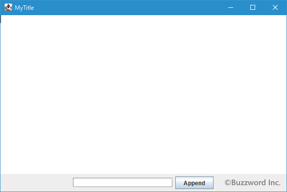
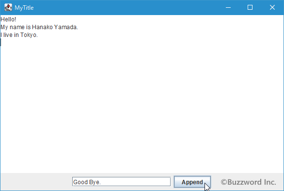
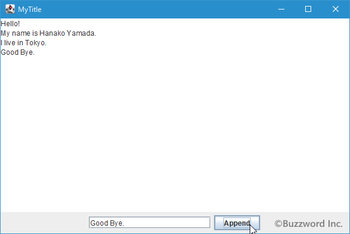
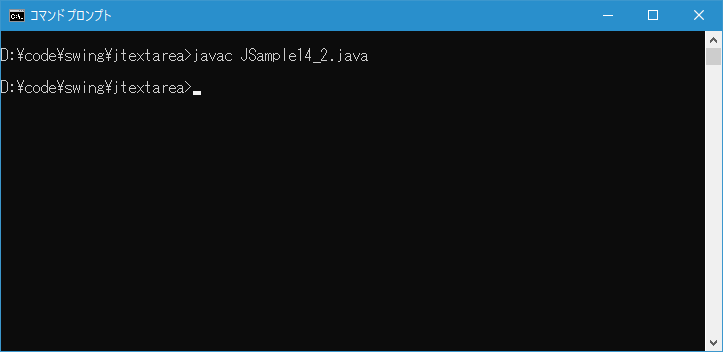
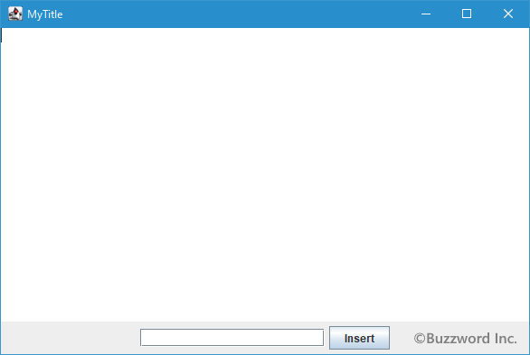
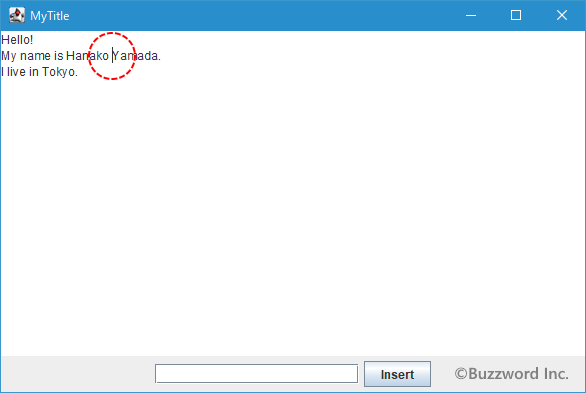
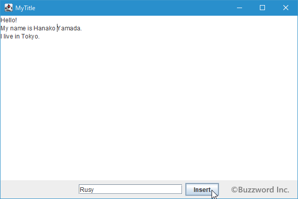
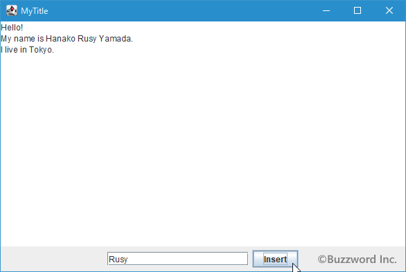
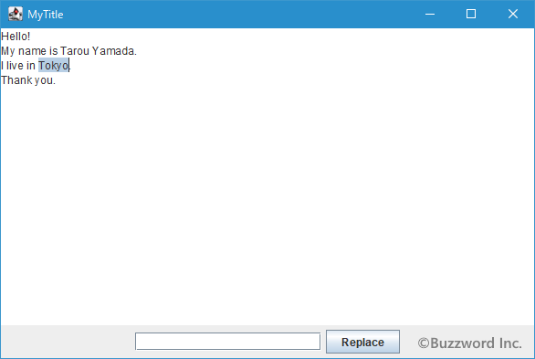
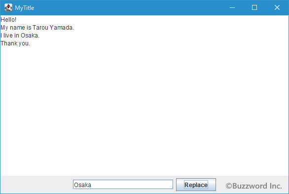

テキストエリアへ入力済みのテキストに対する追加/挿入/置き換え
テキストエリアには初期値を設定する以外に入力済みのテキストに対してテキストを追加したり任意の位置に挿入したり、または既存のテキストを他のテキストで置き換えることができます。ここではテキストエリアのテキストに対する追加や挿入や置き換えを行う方法について解説します。
テキストエリアにテキストを追加する
テキストエリアに入力済みのテキストの末尾に他のテキストを追加するには JTextArea クラスで定義されている append メソッドを使います。
public void append?(String str)
指定されたテキストをドキュメントの末尾に追加します。 モデルがnullの場合、あるいは文字列がnullか空の場合には何も行いません。
パラメータ:
str - 挿入するテキスト
引数には末尾に追加する文字列を String クラスのオブジェクトを使って指定します。
実際の使い方は次のようになります。
JTextArea textarea = new JTextArea("Hello!");
textarea.append("Bye!");
この場合、テキストエリアに入力されているテキストは "Hello!Bye!" となります。
サンプルプログラム
それでは簡単なサンプルプログラムを作って試してみます。テキストエディタで次のように記述したあと、 JSample14_1.java という名前で保存します。
import javax.swing.JFrame;
import javax.swing.JTextArea;
import javax.swing.JTextField;
import javax.swing.JPanel;
import javax.swing.JButton;
import java.awt.Container;
import java.awt.BorderLayout;
import java.awt.event.ActionListener;
import java.awt.event.ActionEvent;
import java.awt.Color;
class JSample14_1 extends JFrame implements ActionListener{
JTextArea textarea;
JTextField text;
public static void main(String args[]){
JSample14_1 frame = new JSample14_1("MyTitle");
frame.setVisible(true);
}
JSample14_1(String title){
setTitle(title);
setBounds(100, 100, 600, 400);
setDefaultCloseOperation(JFrame.EXIT_ON_CLOSE);
textarea = new JTextArea();
text = new JTextField(20);
JButton button = new JButton("Append");
button.addActionListener(this);
JPanel p = new JPanel();
p.add(text);
p.add(button);
Container contentPane = getContentPane();
contentPane.add(textarea, BorderLayout.CENTER);
contentPane.add(p, BorderLayout.SOUTH);
}
public void actionPerformed(ActionEvent e){
String str = text.getText();
textarea.append(str);
}
}
次のようにコンパイルを行います。
javac JSample14_1.java
コンパイルが終わりましたら実行します。
java JSample14_1
テキストエリアを画面中央いっぱいに追加し、画面下部にテキストフィールドとボタンを 1 つずつ追加しています。

テキストエリアにテキストを入力したあと、画面下部のテキストフィールドにテキストを入力してからボタンをクリックしてください。


テキストエリアに入力されているテキストの末尾にテキストフィールドに入力したテキストが追加されました。
テキストエリアの任意の位置にテキストを挿入する
テキストエリアに入力済みのテキストの任意の位置に他のテキストを挿入するには JTextArea クラスで定義されている insert メソッドを使います。
public void insert?(String str, int pos)
指定されたテキストを指定の位置に挿入します。 モデルがnullの場合、あるいはテキストがnullまたは空の場合は何も行いません。
パラメータ:
str - 挿入するテキスト
pos - 挿入位置>= 0
例外:
IllegalArgumentException - posがモデル内の無効な位置にある場合
1 番目の引数には挿入する文字列を String クラスのオブジェクトを使って指定します。 2 番目の引数には挿入する位置を int 型の数値で指定します。位置は先頭の文字の前の位置が 0 、先頭の位置と次の文字の間の位置が 1 、といった感じになります。
実際の使い方は次のようになります。
JTextArea textarea = new JTextArea("Hello!Bye!");
textarea.insert?("Thanks!", 6);
この場合、テキストエリアに入力されているテキストは "Hello!Thanks!Bye!" となります。
なおこの後のサンプルで、テキストエリアの中でキャレットが今置かれている位置を取得する方法として JTextArea クラスの親クラスである JTextComponent で用意されている setCaretPosition メソッドを使っています。
public int getCaretPosition()
テキスト・コンポーネントのテキスト挿入キャレットの位置を返します。
戻り値:
テキスト・コンポーネントのテキスト挿入キャレットの位置(0以上)
メソッドを実行すると、キャレットの位置を int 型の数値で返します。位置に関する考え方は insert? メソッドの位置の考え方と同じです。
サンプルプログラム
それでは簡単なサンプルプログラムを作って試してみます。テキストエディタで次のように記述したあと、 JSample14_2.java という名前で保存します。
import javax.swing.JFrame;
import javax.swing.JTextArea;
import javax.swing.JTextField;
import javax.swing.JPanel;
import javax.swing.JButton;
import java.awt.Container;
import java.awt.BorderLayout;
import java.awt.event.ActionListener;
import java.awt.event.ActionEvent;
import java.awt.Color;
class JSample14_2 extends JFrame implements ActionListener{
JTextArea textarea;
JTextField text;
public static void main(String args[]){
JSample14_2 frame = new JSample14_2("MyTitle");
frame.setVisible(true);
}
JSample14_2(String title){
setTitle(title);
setBounds(100, 100, 600, 400);
setDefaultCloseOperation(JFrame.EXIT_ON_CLOSE);
textarea = new JTextArea();
text = new JTextField(20);
JButton button = new JButton("Insert");
button.addActionListener(this);
JPanel p = new JPanel();
p.add(text);
p.add(button);
Container contentPane = getContentPane();
contentPane.add(textarea, BorderLayout.CENTER);
contentPane.add(p, BorderLayout.SOUTH);
}
public void actionPerformed(ActionEvent e){
String str = text.getText();
int pos = textarea.getCaretPosition();
textarea.insert(str, pos);
}
}
次のようにコンパイルを行います。
javac JSample14_2.java

コンパイルが終わりましたら実行します。
java JSample14_2
テキストエリアを画面中央いっぱいに追加し、画面下部にテキストフィールドとボタンを 1 つずつ追加しています。

テキストエリアにテキストを入力したあと、テキストを挿入したい位置にキャレットを置いてください。

その後で画面下部のテキストフィールドにテキストを入力してからボタンをクリックしてください。


テキストエリアに入力されているテキストの中でキャレットがあった位置にテキストフィールドに入力したテキストが挿入されました。
テキストエリアの任意の範囲のテキストを別のテキストで置き換える
テキストエリアに入力済みのテキストの中で、任意の範囲のテキストを別のテキストで置き換えるには JTextArea クラスで定義されている replaceRange メソッドを使います。
public void replaceRange?(String str, int start, int end)
指定された開始位置から終了位置までのテキストを、新しい指定テキストで置き換えます。 モデルがnullの場合は何も行いません。 新しい文字列がnullまたは空の場合は、単純にdeleteを実行します。
パラメータ:
str - 置換えに使用するテキスト
start - 開始位置>= 0
end - 終了位置>= start
例外:
IllegalArgumentException - 範囲の一部がモデル内の無効な位置にある場合
1 番目の引数には置き換える文字列を String クラスのオブジェクトを使って指定します。 2 番目の引数には置き換える位置の開始位置を int 型の数値で指定します。 3 番目の引数には置き換える位置の終了位置を int 型の数値で指定します。位置は先頭の文字の前の位置が 0 、先頭の位置と次の文字の間の位置が 1 、といった感じになります。
実際の使い方は次のようになります。
JTextArea textarea = new JTextArea("Hello!Bye!");
textarea.replaceRange?("ELLO", 1, 5);
この場合、テキストエリアに入力されているテキストは "HELLO!Bye!" となります。
なおこの後のサンプルで、テキストエリアの中で現在選択されている位置を取得する方法として JTextArea クラスの親クラスである JTextComponent で用意されている getSelectionStart メソッドおよび getSelectionEnd メソッドを使っています。
public int getSelectionStart()
選択したテキストの開始位置を返します。 ドキュメントが空の場合は0、選択領域がない場合はドットの値を返します。
戻り値:
開始位置>= 0
public int getSelectionEnd()
選択したテキストの末尾位置を返します。 ドキュメントが空の場合は0、選択領域がない場合はドットの値を返します。
戻り値:
末尾位置>= 0
それぞれのメソッドを実行すると、テキストエリアの中で現在選択されている位置の開始位置と終了位置をそれぞれ int 型の数値で返します。位置に関する考え方は replaceRange? メソッドの位置の考え方と同じです。
サンプルプログラム
それでは簡単なサンプルプログラムを作って試してみます。テキストエディタで次のように記述したあと、 JSample14_3.java という名前で保存します。
import javax.swing.JFrame;
import javax.swing.JTextArea;
import javax.swing.JTextField;
import javax.swing.JPanel;
import javax.swing.JButton;
import java.awt.Container;
import java.awt.BorderLayout;
import java.awt.event.ActionListener;
import java.awt.event.ActionEvent;
import java.awt.Color;
class JSample14_3 extends JFrame implements ActionListener{
JTextArea textarea;
JTextField text;
public static void main(String args[]){
JSample14_3 frame = new JSample14_3("MyTitle");
frame.setVisible(true);
}
JSample14_3(String title){
setTitle(title);
setBounds(100, 100, 600, 400);
setDefaultCloseOperation(JFrame.EXIT_ON_CLOSE);
textarea = new JTextArea();
text = new JTextField(20);
JButton button = new JButton("Replace");
button.addActionListener(this);
JPanel p = new JPanel();
p.add(text);
p.add(button);
Container contentPane = getContentPane();
contentPane.add(textarea, BorderLayout.CENTER);
contentPane.add(p, BorderLayout.SOUTH);
}
public void actionPerformed(ActionEvent e){
String str = text.getText();
int start_pos = textarea.getSelectionStart();
int end_pos = textarea.getSelectionEnd();
textarea.replaceRange(str, start_pos, end_pos);
}
}
次のようにコンパイルを行います。
javac JSample14_3.java
コンパイルが終わりましたら実行します。
java JSample14_2
テキストエリアを画面中央いっぱいに追加し、画面下部にテキストフィールドとボタンを 1 つずつ追加しています。
テキストエリアにテキストを入力したあと、テキストを置き換えたい部分をマウスまたはテキストで選択してください。

その後で画面下部のテキストフィールドにテキストを入力してからボタンをクリックしてください。

テキストエリアに入力されているテキストの中で選択されていた部分がテキストフィールドに入力したテキストで置き換えられました。
-- --
テキストエリアのテキストに対する追加や挿入や置き換えを行う方法について解説しました。
( Written by Tatsuo Ikura )

著者 / TATSUO IKURA
初心者～中級者の方を対象としたプログラミング方法や開発環境の構築の解説を行うサイトの運営を行っています。